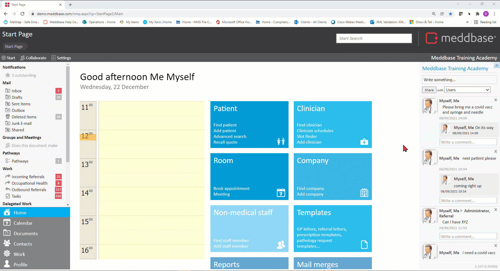

Meddbase allows you to configure invoice behaviour, use specific templates and payment terms on a per company basis. This allows you to accommodate different billing arrangements between Creditors and Debtors in the application.
This article will explain the purpose of all settings and options available on a Company Details page in the Accounts section.
To view and configure this section of a company record, follow the steps below:-

The Accounts section allows multiple settings and selections related to the respective company's accounts and billing, as described in the table below:
| Setting | Effect/behaviour |
| Primary Billing Contact | The Primary Billing Contact's email address will be used by the system when emailing an invoice marked as Sent to the respective Debtor Company. Prior to selection, the Billing Contact details need to be added on the Company Details page under Contacts. |
| Invoice grouping by time* | This setting forces all Billing Items consumed by a Debtor Company within a selected time frame onto 1 invoice, e.g. 5 patients paid for by Insurance Company "My Insurance Co.", consuming 10 appointments within the specified time frame, will result in 1 invoice being raised, containing 10 billing items for all 5 patients. The invoice's status will remain 'Not Sent' until the specified cut off date, i.e. 1 day, week, months etc. |
Invoice grouping by account* | This setting forces all Billing Items consumed by individual patients onto separate invoices per patient, e.g. 2 Self-Pay patients consuming 1 service each for 10 consecutive days will result in 2 invoices being raised (1 for each patient), with each invoice containing 10 billing items consumed by the respective patient. Click here for more details. |
| Allow default invoice templates | This setting allows the system to use generic/default invoice template for printing/email attachments for the respective charging company. All invoice templates should be set up as Document templates in the Meddbase Template system (click here for more details on Templates) Default Invoice Templates should be added to one of the (default) document template types under Templates > System Templates, so either Invoices - Company (default) or Invoices - Patient (default) |
| Credit note template | This dropdown allows selecting a template for Credit Note printing for the respective company. The template(s) should be set up in the Meddbase template system under Credit Notes document type. |
| Account manager | Allows a specific person to be assigned as an Account Manager (most relevant for Employers) so they can receive emails. Has no functional impact on the company's accounts |
| Customer type | A reportable field populated from the Customer Type Common Catalogue. Also available as a Template Code. |
| Payment terms | A reportable field populated from the Payment Terms Common Catalogue. Also available as a Template Code. |
*The above settings related to Invoice Grouping will yield the desired results when applied/switched on or off, on the relevant Company's Details page, depending on the patient's Payer (or Preferred Payer) setting, i.e. for Self-Pay Patient invoices to be grouped by time or account, the relevant settings need apply on the Creditor Company (the chamber) Details page. For patients paid for by 3rd parties, e.g. Insurer or Employer, the settings need apply on the respective Insurer's or Employer's Details page. Invoice grouping by time and Invoice grouping by account settings should not be used simultaneously